Figma Design System Architecture & 20-Screen High-Fidelity Wireframe Blueprint for ROADWATCH DBMS
| * Kanak Waradkar | Roll No: 24B-CO-030 |
Email: kanakwaradkar@gmail.com (Team Lead) |
|---|---|---|
| * Krushna Surve | Roll No: 24B-CO-031 |
Email: krushnasurve07@gmail.com |
| * Manjunath Subhash Gavada | Roll No: 24B-CO-035 |
Email: manjunathgavada40@gmail.com |
The ROADWATCH interface architecture is engineered around the real Next.js 14 application routes (/, /map, /report, /chat, /twin, /operations, /ledger) and binds directly to the 31 PostgreSQL 15 / PostGIS 3.3 database relations, analytical views, and PL/pgSQL trigger functions defined in docs/schema.sql.
In accordance with professional Figma design conventions, each Frame represents a distinct, full-viewport standalone screen of the application:
1440 x 900 px): 12-column layout grid (220px persistent left navigation sidebar, 56px top multi-region header bar, 1220px workspace canvas).390 x 844 px): iPhone 15/16 viewport standard with status bar, progressive wizard header, geospatial map canvas, and bottom tab bar.| Token Name | Hex Code | UI Role & Database Constraint Binding |
|---|---|---|
| Brand Primary | #2563EB |
Primary interactive actions, active route indicators, spatial selection highlights |
| Surface App Canvas | #F8FAFC |
Primary application background across desktop and mobile viewports |
| Surface Elevated Card | #FFFFFF |
Data tables, inspection drawers, KPI metric cards, modal containers |
| Map & Twin Dark Surface | #0F172A |
PostGIS interactive dark map canvas, 3D WebGL Digital Twin, IoT sensor HUD |
| Status: Resolved / Healthy | #16A34A |
complaints.status = 'resolved', health_score >= 75, warranty_status = 'Active' |
| Status: Routed / In Progress | #0284C7 |
complaints.status IN ('routed', 'in_progress'), active tender evaluations |
| Status: Pending / Warning | #D97706 |
complaints.status = 'pending', moderate PCI degradation (50-74), SLA warning |
| Status: Critical / SLA Breach | #DC2626 |
severity = 'critical', escalation_level > 0, contractors.is_blacklisted = TRUE |
Inter / System Sans):22px Bold (700), tracking -0.02em, color #0F172A15px Bold (700), color #0F172A12px Regular/Medium (400/500), color #33415510px Semi-Bold (600), uppercaseJetBrains Mono / SF Mono):19.1197 N, 72.8464 E), primary/foreign keys (SV-RD-01, CMP-00142, CON-00010), PostGIS spatial operators (ST_Contains, ST_DWithin), and JSONB audit diffs.| Frame No. | Figma Frame Name | Viewport | Application Route | Primary PostgreSQL / PostGIS Relations Bound |
|---|---|---|---|---|
| Frame 01 | Frame_01_Civic_Portal_Landing_Hero |
1440 x 900 |
/ |
regions, roads, complaints, projects, cost_per_km_view |
| Frame 02 | Frame_02_Geospatial_Road_Registry_Map |
1440 x 900 |
/map |
roads, authorities, contractors, projects, complaints |
| Frame 03 | Frame_03_Mobile_Wizard_Step1_GPS_Snap |
390 x 844 |
/report (Step 1) |
roads.geom, authorities.jurisdiction_geom (ST_DWithin, ST_Contains) |
| Frame 04 | Frame_04_Mobile_Wizard_Step2_AI_Vision |
390 x 844 |
/report (Step 2) |
complaints, ai_Condition_Assessments |
| Frame 05 | Frame_05_Mobile_Duplicate_And_Offline_Sync |
390 x 844 |
/report (Step 3) |
complaints (upvote_count), IndexedDB / Dexie offline queue |
| Frame 06 | Frame_06_Mobile_Citizen_SLA_Timeline |
390 x 844 |
/report/history |
complaints, status_history, sla_config, routing_feedback |
| Frame 07 | Frame_07_AI_Accountability_Chat_RAG |
1440 x 900 |
/chat |
complaints, authorities, authority_contacts, escalation_rules |
| Frame 08 | Frame_08_3D_Digital_Twin_Inspection |
1440 x 900 |
/twin (3D Mesh) |
roads, road_materials, project_warranties, ai_Condition_Assessments |
| Frame 09 | Frame_09_IoT_Pavement_Sensor_Network |
1440 x 900 |
/twin (Sensors) |
iot_Sensors, sensor_Readings, road_materials |
| Frame 10 | Frame_10_Historical_Deterioration_Playback |
1440 x 900 |
/twin (Timeline) |
road_defect_history, projects, complaints |
| Frame 11 | Frame_11_Municipal_Operations_Command |
1440 x 900 |
/operations |
complaints, authorities, authority_webhooks, status_history |
| Frame 12 | Frame_12_Automated_SLA_Escalation_Engine |
1440 x 900 |
/operations/sla |
sla_config, sla_escalations, escalation_rules, authority_contacts |
| Frame 13 | Frame_13_Geospatial_Conflict_Resolver |
1440 x 900 |
/operations/gis |
road_conflict_groups, road_aliases, road_region_crossings |
| Frame 14 | Frame_14_Field_Repair_Milestone_Scheduler |
1440 x 900 |
/operations/gantt |
projects, project_milestones, contractors, authorities |
| Frame 15 | Frame_15_Multi_Region_Hub_Data_Catalog |
1440 x 900 |
/operations/regions |
regions, region_import_log, cpi_data, classification_Standards |
| Frame 16 | Frame_16_Public_Spend_Sankey_CostPerKM |
1440 x 900 |
/ledger (Sankey) |
fund_sources, projects, cost_per_km_view, project_beneficiaries |
| Frame 17 | Frame_17_Budget_Variance_Approval_Trail |
1440 x 900 |
/ledger/variance |
budget_variance_reasons, contingency_reserves, approval_trail |
| Frame 18 | Frame_18_Contractor_Scorecards_Blacklist |
1440 x 900 |
/ledger/contractors |
contractors, projects, project_warranties (trg_contractor_perf_index) |
| Frame 19 | Frame_19_Public_Procurement_Tenders_Matrix |
1440 x 900 |
/ledger/tenders |
tenders, tender_bids, evaluation_criteria, contractors |
| Frame 20 | Frame_20_Immutable_Database_Audit_Log |
1440 x 900 |
/ledger/audit |
audit_log (row_to_jsonb_audit PL/pgSQL trigger) |
* Figma Frame ID: Frame_01_Civic_Portal_Landing_Hero |
Viewport: Desktop (1440 x 900 px) |
|---|
Sidebar (220px) with route links and live PostGIS database heartbeat badge (PostgreSQL 15 + PostGIS 3.3).TopNav (56px) featuring the RegionSelector (IN - India / Mumbai), global search bar (Cmd+K), and primary Report Road Issue CTA.WEH-NH8, SV-RD-01, LBS-01, BWSL-01, EEH-NH4).412 Gazetted Roads, Rs 412.8 Cr Active Capital Spend, 1,284 Citizen Complaints, 89.6% SLA Compliance) and a bottom preview table of critical road corridors.regions, roads, complaints, projects, and cost_per_km_view.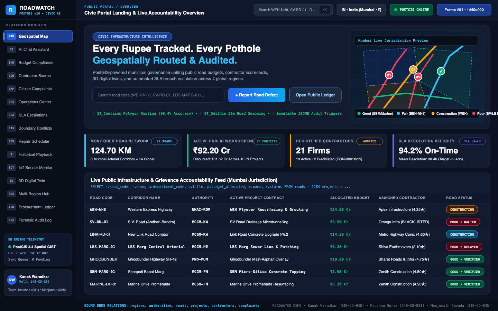
* Figma Frame ID: Frame_02_Geospatial_Road_Registry_Map |
Viewport: Desktop (1440 x 900 px) |
|---|
#0B1120) rendering WardsLayer jurisdictional polygons (BMC, MMRDA, MSRDC) and color-coded RoadsLayer polylines (GEOMETRY(LineString, 4326)).MapSearchBar and LayerControls filter bar at top-left, plus a MapLegend overlay at bottom-left.RoadDetailsPanel right-hand drawer (450px wide) inspecting Swami Vivekananda Road (SV-RD-01) with tabs for Overview & Specs, Projects & Cost/KM (3), Complaints (68), and Contractors (2).roads joined with authorities, projects, contractors, and complaints where road_id = 'RD-IN-002'.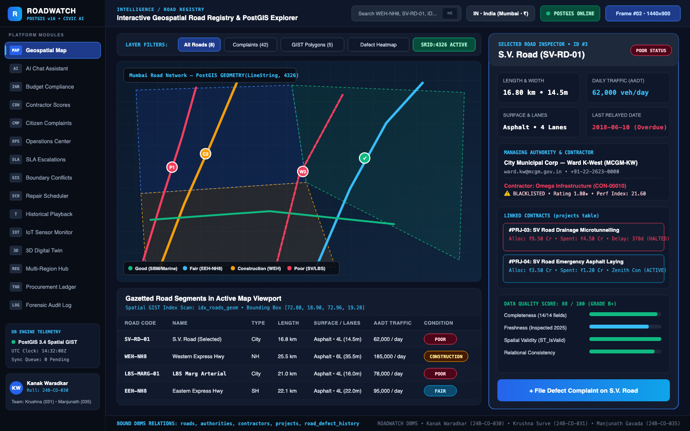
* Figma Frame ID: Frame_03_Mobile_Wizard_Step1_GPS_Snap |
Viewport: Mobile (390 x 844 px) |
|---|
1. GPS & Snap).19.1197 N, 72.8464 E) with a blue target reticle and a dashed snap vector (4.2m) connecting the raw GPS coordinate to the SV-RD-01 LineString centerline.Swami Vivekananda Road), Jurisdiction (Brihanmumbai Municipal Corporation), and Active Warranty Liability (M/s Apex Roadbuilders).ST_DWithin(roads.geom, ST_SetSRID(ST_MakePoint(lng, lat), 4326), 20.0) and ST_Contains(authorities.jurisdiction_geom, ST_SetSRID(ST_MakePoint(lng, lat), 4326)).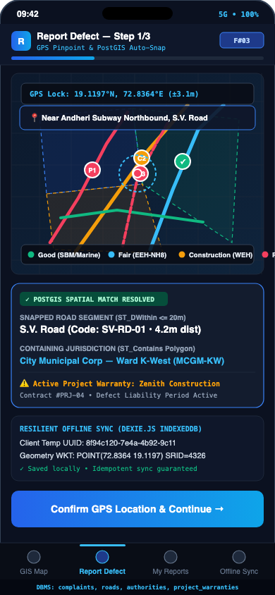
* Figma Frame ID: Frame_04_Mobile_Wizard_Step2_AI_Vision |
Viewport: Mobile (390 x 844 px) |
|---|
pothole_cluster: 96.4%, edge_ravelling: 88.1%).ai_Condition_Assessments) recommending CRITICAL severity based on 9.5cm estimated crater depth.Pothole / Crater, Surface Cracking, Waterlogging, Open Manhole, Subsidence, Edge Erosion) and 5-level severity segmented bar.complaints (defect_type, severity, photo_url, description) and inserts telemetry into ai_Condition_Assessments.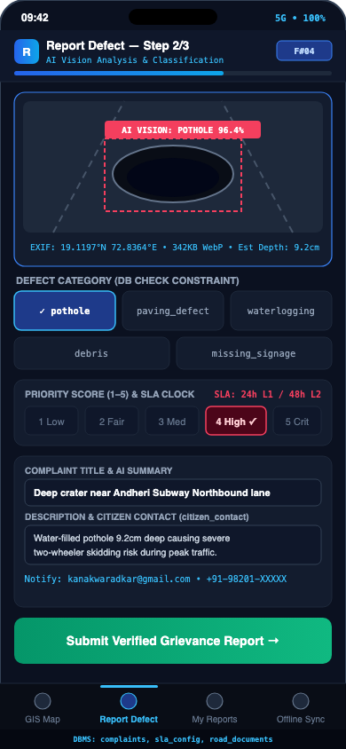
DuplicateComplaintDialog) & Dexie.js Offline Sync* Figma Frame ID: Frame_05_Mobile_Duplicate_And_Offline_Sync |
Viewport: Mobile (390 x 844 px) |
|---|
DuplicateComplaintDialog warning banner triggered when PostGIS ST_DWithin detects an active complaint (#CMP-00142) within a 25-meter radius on the same road segment.Upvote Existing #CMP-00142 (+1 Priority Boost) vs. Submit as Separate New Ticket.Dexie.js) Offline Sync Queue card showing queued photo blobs and exponential backoff retry status (synced vs. pending_retry).complaints.upvote_count or inserts a new row into complaints via idempotent client UUID sync.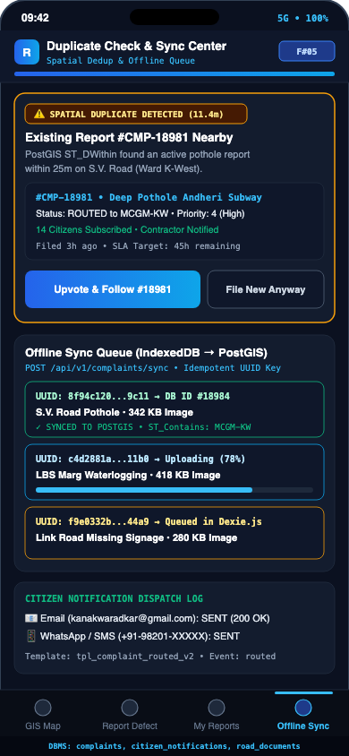
* Figma Frame ID: Frame_06_Mobile_Citizen_SLA_Timeline |
Viewport: Mobile (390 x 844 px) |
|---|
14 Submitted, 11 Resolved, 2 In Progress, 1 SLA Escalated) and live SLA countdown badge (06h 18m Left out of 24h Critical SLA).status_history audit stepper tracing the ticket from Submitted & Geo-Validated to Contractor Crew Dispatched.RoutingFeedback card asking the citizen to verify whether BMC K-West Ward is the correct authority (routing_feedback table).complaints joined with status_history, sla_config, and routing_feedback.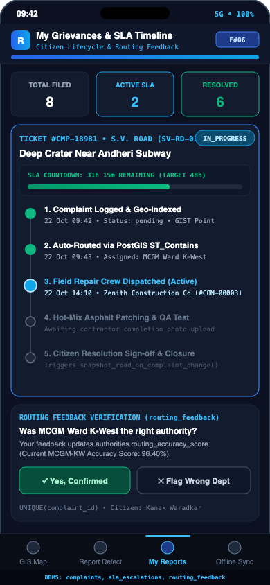
/chat) & Automated Routing Cards* Figma Frame ID: Frame_07_AI_Accountability_Chat_RAG |
Viewport: Desktop (1440 x 900 px) |
|---|
resolve_jurisdiction_postgis, query_road_warranty_and_projects, fetch_escalation_chain) showing query execution latency.CON-00001), budget utilization (Rs 40.10 Cr / Rs 38.50 Cr), and defect density on SV-RD-01.RoutedToCard (authority_contacts) and 3-tier EscalationChainCard (escalation_rules).roads, projects, project_warranties, contractors, authorities, authority_contacts, and escalation_rules.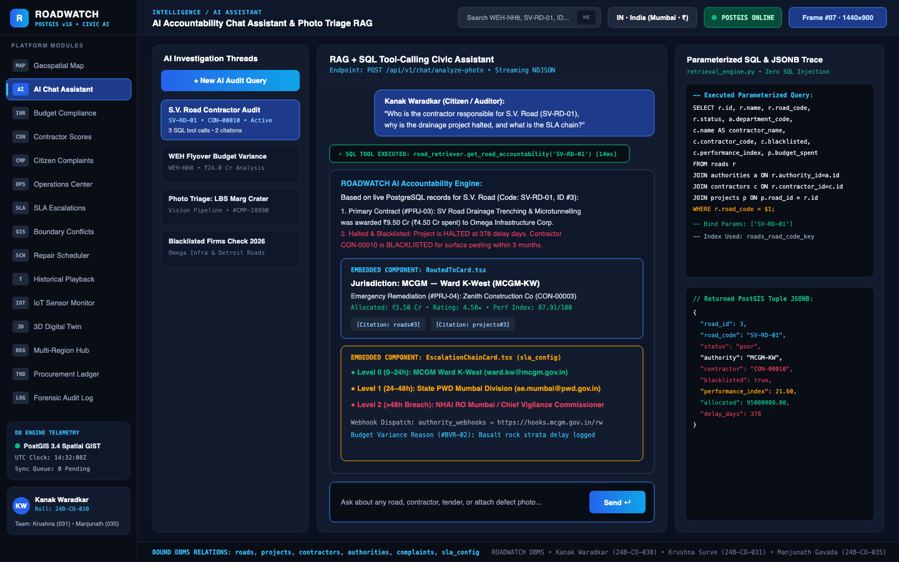
/twin), Road Materials & Warranty Layer* Figma Frame ID: Frame_08_3D_Digital_Twin_Inspection |
Viewport: Desktop (1440 x 900 px) |
|---|
WEH-NH8) (Three.js / WebGL) with volumetric defect heatmaps (CRACK-09, POTHOLE-14) and camera orbit controls.RoadSelector rail listing monitored corridors (WEH-NH8, SV-RD-01, BWSL-01, LBS-01) with live PCI scores.road_materials (SMA Wearing Course, DBM Base, Wet Mix Macadam, Granular Sub-Base) and active project_warranties penalty status.roads, road_materials, project_warranties, and ai_Condition_Assessments.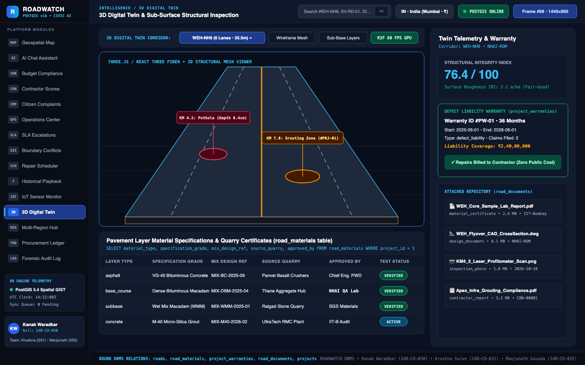
* Figma Frame ID: Frame_09_IoT_Pavement_Sensor_Network |
Viewport: Desktop (1440 x 900 px) |
|---|
24 Embedded Nodes, 18.4% Peak Sub-Base Moisture, 4.42 G Peak Axle Vibration, and 99.2% LoRaWAN Uplink Uptime.UndergroundCrossSection diagram showing physical sensor placement across asphalt and sub-base strata (SEN-WEH-01 to SEN-WEH-04) alongside a 24-hour time-series anomaly chart (sensor_Readings).iot_Sensors hardware registry table with battery health, calibration dates, and alert thresholds.iot_Sensors joined with time-series records in sensor_Readings and road_materials.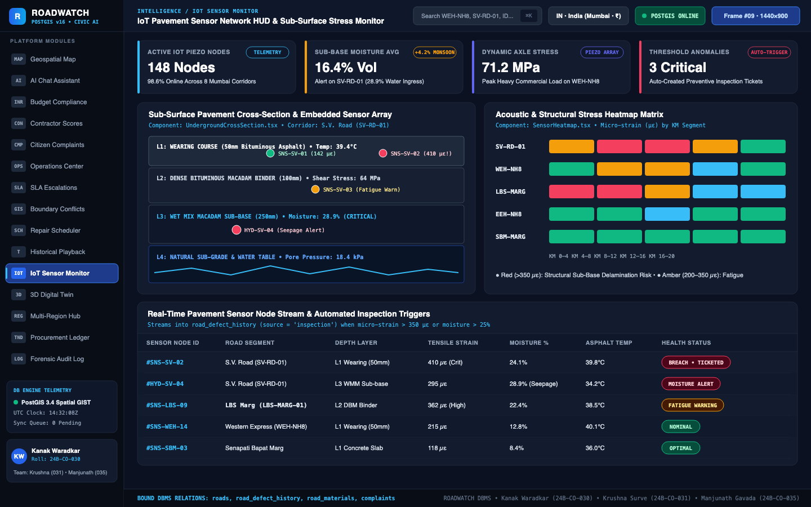
TimelineSlider & road_defect_history)* Figma Frame ID: Frame_10_Historical_Deterioration_Playback |
Viewport: Desktop (1440 x 900 px) |
|---|
TimelineSlider (2021 to 2026) with play/step controls and monsoon scrubbing markers.SV-RD-01 contrasting post-resurfacing baseline (Oct 2022, PCI 91/100) against current post-monsoon condition (Oct 2026, PCI 48/100).road_defect_history ledger linking recurring defects to warranty recovery claims.road_defect_history joined with roads, projects, and complaints.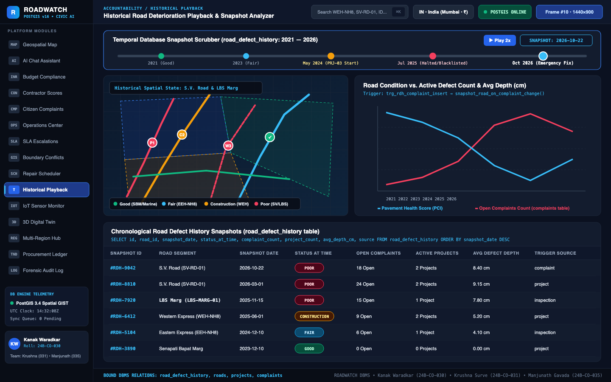
/operations), Triage & Webhooks* Figma Frame ID: Frame_11_Municipal_Operations_Command |
Viewport: Desktop (1440 x 900 px) |
|---|
184 Open Queue, 14 Critical Overdue, 19.4h Mean Time to Repair, 99.4% Webhook Delivery Rate).Dispatch / Escalate actions.authority_webhooks endpoint health monitor and dark LiveSystemLog terminal streaming real-time PostGIS trigger and webhook events.complaints, authorities, authority_webhooks, and status_history.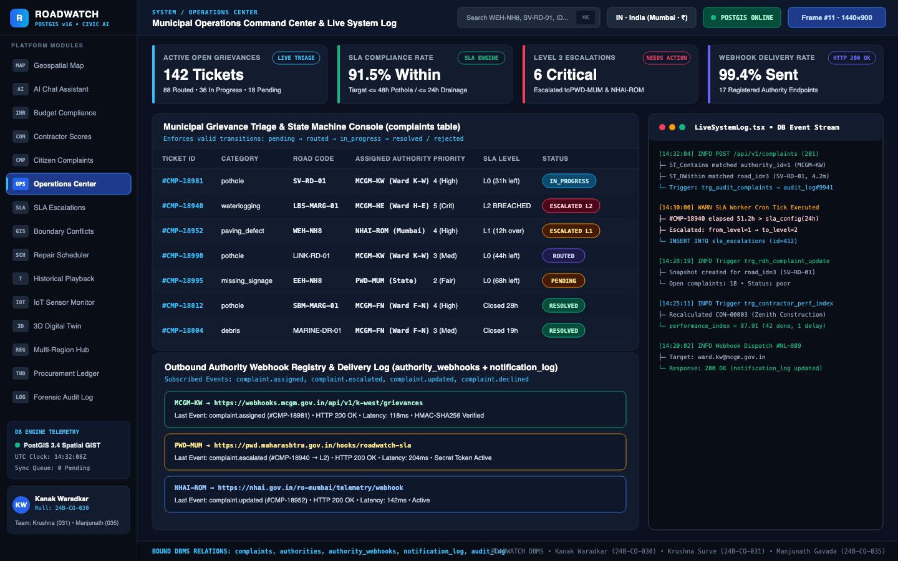
sla_config & sla_escalations)* Figma Frame ID: Frame_12_Automated_SLA_Escalation_Engine |
Viewport: Desktop (1440 x 900 px) |
|---|
sla_config statutory matrix defining response, repair, and escalation windows across CRITICAL (24h), HIGH (48h), MEDIUM (72h), and LOW (168h) severities, plus a visual 3-tier escalation pipeline (L1 Ward JE -> L2 Executive Eng -> L3 Municipal Commissioner).sla_escalations breach incident feed highlighting overdue tickets (#CMP-00142, #CMP-00139, #CMP-00131) with accrued contractor liquidated damages and Force Contractor Penalty controls.sla_config, sla_escalations, escalation_rules, and authority_contacts.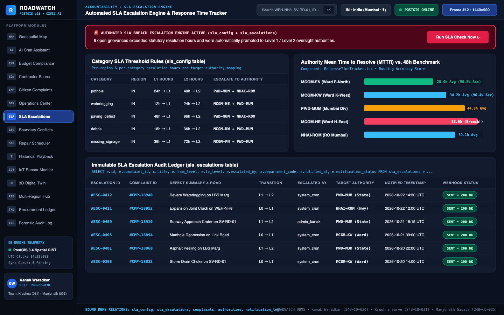
* Figma Frame ID: Frame_13_Geospatial_Conflict_Resolver |
Viewport: Desktop (1440 x 900 px) |
|---|
BMC vs. MMRDA vs. MSRDC).ST_Intersection, ST_Overlaps) at the Andheri Flyover Junction (WEH-NH8 / SV-RD-01) where MMRDA flyover deck jurisdiction intersects BMC surface slip-roads.road_conflict_groups adjudication console (CFG-IN-001 to CFG-IN-003) and road_aliases / road_region_crossings canonical mapping table.road_conflict_groups, road_aliases, road_region_crossings, roads, and authorities.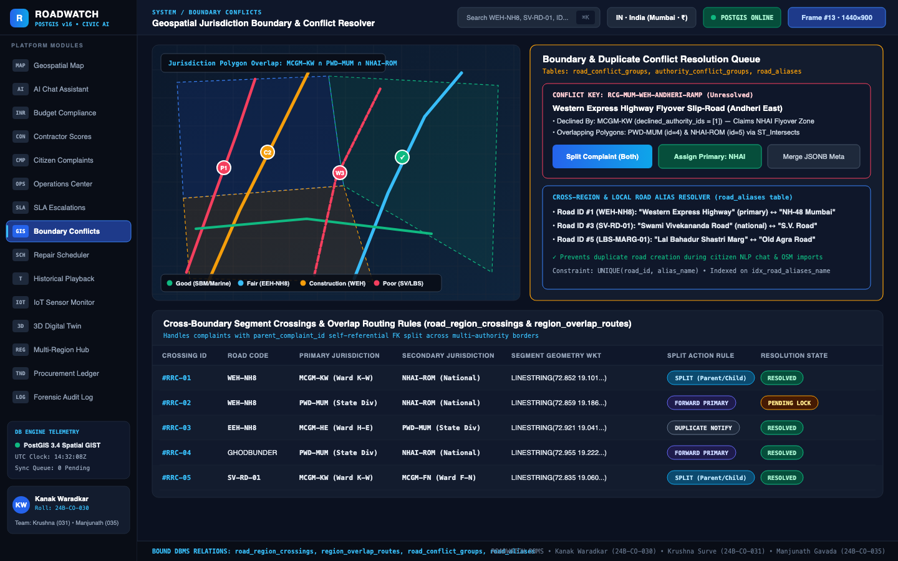
project_milestones Verification* Figma Frame ID: Frame_14_Field_Repair_Milestone_Scheduler |
Viewport: Desktop (1440 x 900 px) |
|---|
Jul 2026 - Dec 2026) tracking project_milestones (M1 Milling through M5 Final Core Audit) for PRJ-00012: S.V. Road Asphalt Resurfacing.51.2 mm compacted thickness, 98.4% Marshall density), dual digital signatures, and treasury payout authorization (Rs 9.60 Cr).projects joined with project_milestones, contractors, and authorities.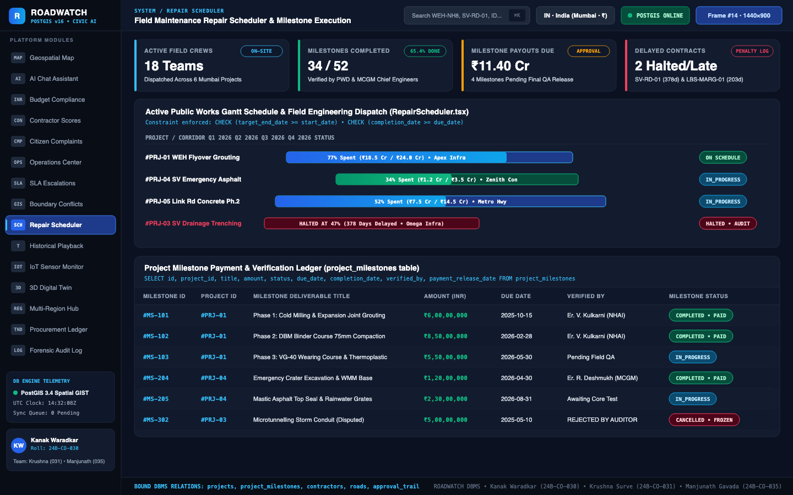
IN, US, GB, KE) & Data Catalog* Figma Frame ID: Frame_15_Multi_Region_Hub_Data_Catalog |
Viewport: Desktop (1440 x 900 px) |
|---|
IN - Mumbai, US - Detroit, GB - London, KE - Nairobi) detailing localized currencies (INR, USD, GBP, KES), administrative hierarchies, and design standards (IRC:37, AASHTO, DMRB, RDM).region_import_log GeoJSON/Shapefile ingestion pipeline history (IMP-2026-089 to IMP-2026-081).cpi_data inflation normalization table and classification_Standards cross-country road hierarchy equivalencies.regions, region_import_log, cpi_data, and classification_Standards.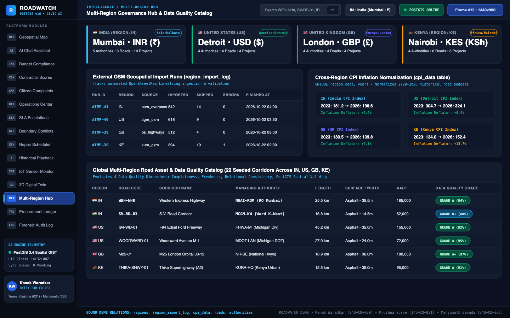
/ledger), Sankey Flow & cost_per_km_view* Figma Frame ID: Frame_16_Public_Spend_Sankey_CostPerKM |
Viewport: Desktop (1440 x 900 px) |
|---|
SankeyFlowVisualizer tracing Rs 412.8 Cr from fund_sources (BMC Capital Fund, MMRDA Infra Grant, World Bank Urban) through authorities (BMC, MMRDA, MSRDC) to executing contractors (Apex Infra, L&T Geo, Omega Infra).project_beneficiaries socio-economic impact panel (4.82M Daily Commuters).cost_per_km_view analytical table benchmarking CPI-adjusted Cost / KM against statutory highway class norms (+53.5% CRITICAL OVERRUN flagged on LBS-01).fund_sources, projects, cost_per_km_view, cpi_data, and project_beneficiaries.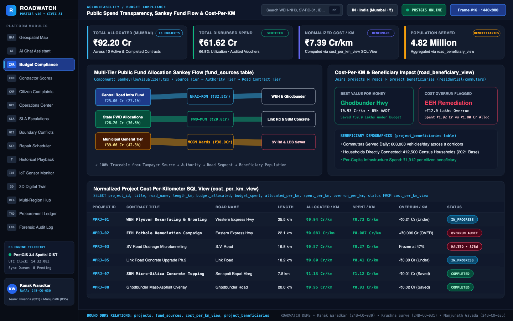
approval_trail* Figma Frame ID: Frame_17_Budget_Variance_Approval_Trail |
Viewport: Desktop (1440 x 900 px) |
|---|
Rs 384.0 Cr Original Sanctioned, Rs 412.8 Cr Revised Actual, +Rs 28.8 Cr Net Variance, Rs 14.2 Cr Contingency Remaining).budget_variance_reasons itemization ledger (BVR-0041 to BVR-0032) with forensic audit flags (AUDIT QUERY on PRJ-00019 unverified rate escalation).approval_trail multi-stage sign-off chain (Junior Eng -> Executive Eng -> Chief Eng -> Standing Committee) and contingency_reserves utilization gauge.budget_variance_reasons, contingency_reserves, approval_trail, and projects.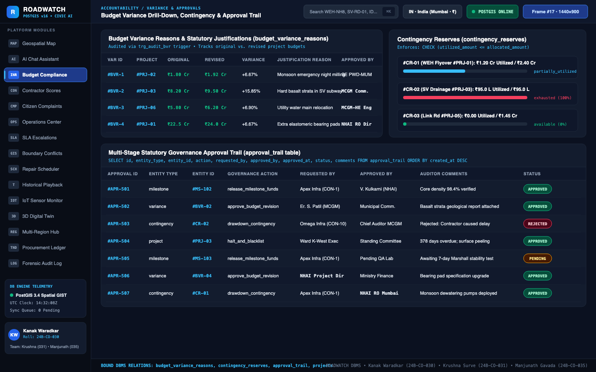
trg_contractor_perf_index) & Blacklist Dossier* Figma Frame ID: Frame_18_Contractor_Scorecards_Blacklist |
Viewport: Desktop (1440 x 900 px) |
|---|
trg_contractor_perf_index) that automatically recalculates contractor grades whenever project milestones or warranty defects change.contractors registry table ranking firms by performance_index, delay rate, and warranty defect recurrence.CON-00010), detailing is_blacklisted = TRUE enforcement, Rs 4.20 Cr surety bond forfeiture, and 6-axis radar scorecard comparison against Apex Roadbuilders.contractors, projects, and project_warranties, governed by trigger trg_contractor_perf_index.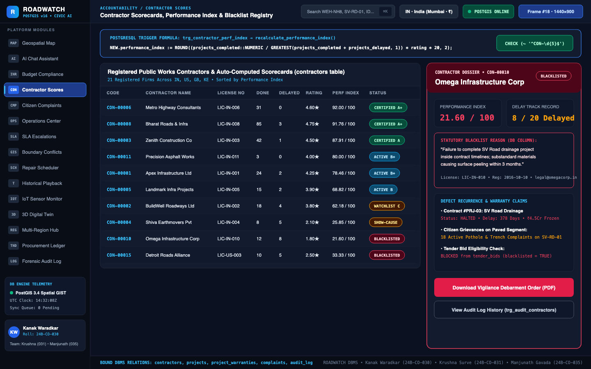
tenders, tender_bids, evaluation_criteria)* Figma Frame ID: Frame_19_Public_Procurement_Tenders_Matrix |
Viewport: Desktop (1440 x 900 px) |
|---|
S.V. Road Phase-II Full-Depth Reclamation) with Rs 42.00 Cr engineer estimate.tender_bids L1/QCBS comparative evaluation matrix showing automated database trigger rejection (REJECTED (DB TRIGGER)) of blacklisted bidder CON-00010 and L1 WINNER recommendation for M/s Larsen & Toubro Geo (CON-00002).evaluation_criteria weightage breakdown (Technical 70% + Financial 30%) and one-click Authorize Award & Generate Project workflow.tenders, tender_bids, evaluation_criteria, and contractors.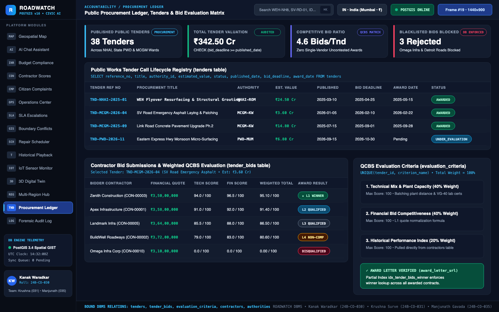
audit_log & Side-by-Side JSONB Diff Explorer* Figma Frame ID: Frame_20_Immutable_Database_Audit_Log |
Viewport: Desktop (1440 x 900 px) |
|---|
audit_log enforcement (REVOKE UPDATE, DELETE ON audit_log FROM PUBLIC) via trigger row_to_jsonb_audit().INSERT, UPDATE, and DELETE events across contractors, complaints, project_milestones, and budget_variance_reasons.old_data in red vs. new_data in green) for AUD-099482 (CON-00010 blacklist enforcement) with SHA-256 row hash verification.audit_log table populated by row_to_jsonb_audit().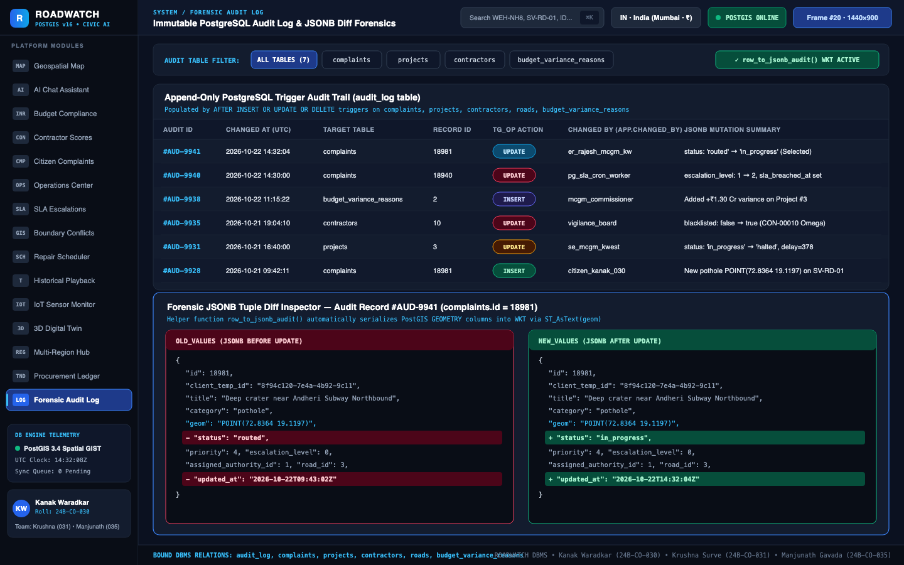
All 20 frames have been generated as native, vector-editable SVG artboards (1440 x 900 Desktop and 390 x 844 Mobile) that Figma natively parses into top-level Figma Frames, nested Groups, Vector Paths, and Editable Text Layers:
1. Method 1 — Drag & Drop All 20 Frames at Once into Figma:
https://www.figma.com).DBMS_Project_Submission/ROADWATCH_All_20_Figma_Frames.svg (or all 20 individual files inside DBMS_Project_Submission/figma_frames/Frame_01_.svg to Frame_20_.svg) directly onto the Figma canvas.Frame_01_Civic_Portal_Landing_Hero through Frame_20_Immutable_Database_Audit_Log) arranged in a 4-column design canvas grid.2. Method 2 — 1-Click Copy & Paste (Cmd+V) from Interactive Showcase:
DBMS_Project_Submission/wireframes/index.html in any browser.Cmd+V) on any screen (or Copy All 20 Frames for Figma (Cmd+V) in the top bar), switch to Figma, and press Cmd+V (Ctrl+V).